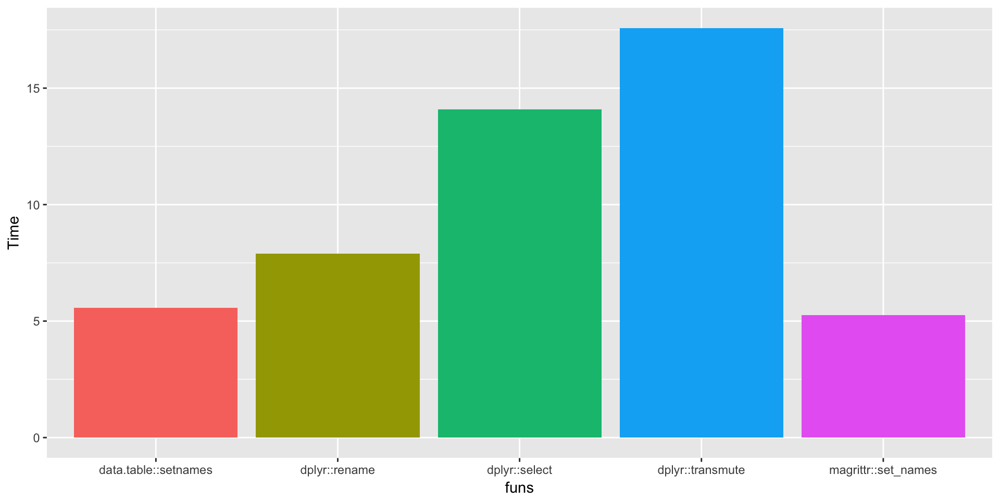

## Warning in system("/usr/libexec/java_home", intern = TRUE): running command
## '/usr/libexec/java_home' had status 1## Warning in library(package, lib.loc = lib.loc, character.only = TRUE,
## logical.return = TRUE, : there is no package called 'agricolae'## Warning in library(package, lib.loc = lib.loc, character.only = TRUE,
## logical.return = TRUE, : there is no package called 'slackr'中間生成なしでカラム名を変更する
中間生成的なことをせずに、dataframeのカラム名を変更するには、
dplyr::rename、magrittr::set_names、data.table::setnames
の３つがある (知っている限り
data_frame(a = 1:5, b = 2:6) %>%
dplyr::rename(a2 = a, b2 = b)## # A tibble: 5 x 2
## a2 b2
## <int> <int>
## 1 1 2
## 2 2 3
## 3 3 4
## 4 4 5
## 5 5 6data_frame(a = 1:5, b = 2:6) %>%
magrittr::set_names(x = ., value = c("a2", "b2"))## # A tibble: 5 x 2
## a2 b2
## <int> <int>
## 1 1 2
## 2 2 3
## 3 3 4
## 4 4 5
## 5 5 6data_frame(a = 1:5, b = 2:6) %>%
data.table::setnames(c("a2", "b2")) %>%
print## # A tibble: 5 x 2
## a2 b2
## <int> <int>
## 1 1 2
## 2 2 3
## 3 3 4
## 4 4 5
## 5 5 6と思っていたけど、dplyr::selectでもいける。
data_frame(a = 1:5, b = 2:6) %>%
select(a2 = a, b2 = b)## # A tibble: 5 x 2
## a2 b2
## <int> <int>
## 1 1 2
## 2 2 3
## 3 3 4
## 4 4 5
## 5 5 6# 他のカラムも残す
data_frame(a = 1:5, b = 2:6, c = 3:7, d = 4:8) %>%
select(a2 = a, everything())## # A tibble: 5 x 4
## a2 b c d
## <int> <int> <int> <int>
## 1 1 2 3 4
## 2 2 3 4 5
## 3 3 4 5 6
## 4 4 5 6 7
## 5 5 6 7 8「selectで列の複製ができるのでは？」と思って、以下のようなコードを書いた結果だめだったので気づいた
# やったこと
data_frame(a = 1:5, b = 2:6) %>%
select(a2 = a, a3 = a, b2 = b)## # A tibble: 5 x 2
## a3 b2
## <int> <int>
## 1 1 2
## 2 2 3
## 3 3 4
## 4 4 5
## 5 5 6# ほしかったもの
data_frame(a = 1:5, b = 2:6) %>%
mutate(a2 = a, a3 = a, b2 = b) %>%
select(-a, -b)## # A tibble: 5 x 3
## a2 a3 b2
## <int> <int> <int>
## 1 1 1 2
## 2 2 2 3
## 3 3 3 4
## 4 4 4 5
## 5 5 5 6dplyr::tranmuteで１行にまとめる
# もう少しよい道筋
data_frame(a = 1:5, b = 2:6) %>%
transmute(a2 = a, a3 = a, b2 = b)## # A tibble: 5 x 3
## a2 a3 b2
## <int> <int> <int>
## 1 1 1 2
## 2 2 2 3
## 3 3 3 4
## 4 4 4 5
## 5 5 5 6とりあえず、速さくらべ
colnames_rename <-
function(iter){
for(i in 1:iter){
data_frame(a = 1:5, b = 2:6) %>%
dplyr::rename(a2 = a, b2 = b)
}
}
colnames_set_names <-
function(iter){
for(i in 1:iter){
data_frame(a = 1:5, b = 2:6) %>%
magrittr::set_names(x = ., value = c("a2", "b2"))
}
}
colnames_setnames <-
function(iter){
for(i in 1:iter){
data_frame(a = 1:5, b = 2:6) %>%
data.table::setnames(c("a2", "b2"))
}
}
colnames_select <-
function(iter){
for(i in 1:iter){
data_frame(a = 1:5, b = 2:6) %>%
dplyr::select(a2 = a, b2 = b)
}
}
colnames_transmute <-
function(iter){
for(i in 1:iter){
data_frame(a = 1:5, b = 2:6) %>%
dplyr::transmute(a2 = a, b2 = b)
}
}
(time_dplyr_rename <- system.time(colnames_rename(10000)))## user system elapsed
## 8.086 0.078 8.299(time_mag <- system.time(colnames_set_names(10000)))## user system elapsed
## 5.802 0.059 6.019(time_dt <- system.time(colnames_setnames(10000)))## user system elapsed
## 7.582 0.257 8.315(time_dplyr_select <- system.time(colnames_select(10000)))## user system elapsed
## 18.539 0.560 19.812(time_dplyr_transmute <- system.time(colnames_transmute(10000)))## user system elapsed
## 21.864 0.636 23.303# とりあえず可視化する
data_frame(funs = factor(c("dplyr::rename", "dplyr::select", "dplyr::transmute", "magrittr::set_names", "data.table::setnames")),
Time = c(time_dplyr_rename[3], time_dplyr_select[3], time_dplyr_transmute[3], time_mag[3], time_dt[3])) %>%
ggplot(aes(x = funs, y = Time, fill = funs)) +
geom_bar(stat = "identity") +
guides(fill = F)
transmuteがかなり遅く、set_names、setnamesが速い
とはいえ
1. カラム名変更を繰り返すシチュエーションが考えづらいこと
2. 列名が多いデータ (wide形式) をほとんど使わないこと
から無視してもよさそう
それと、データハンドリングの過程でmutate, selectに頼らないパターンが稀なので、
その意味でもdplyr系をわざわざ外すメリットが少ない気がする。
session_info()## setting value
## version R version 3.5.0 (2018-04-23)
## system x86_64, darwin15.6.0
## ui X11
## language (EN)
## collate en_US.UTF-8
## tz Asia/Tokyo
## date 2018-05-04
##
## package * version date source
## assertthat 0.2.0 2017-04-11 CRAN (R 3.5.0)
## backports 1.1.2 2017-12-13 CRAN (R 3.5.0)
## base * 3.5.0 2018-04-24 local
## bindr 0.1.1 2018-03-13 CRAN (R 3.5.0)
## bindrcpp 0.2.2 2018-03-29 CRAN (R 3.5.0)
## bitops * 1.0-6 2013-08-17 CRAN (R 3.5.0)
## blogdown 0.6 2018-04-18 CRAN (R 3.5.0)
## bookdown 0.7 2018-02-18 CRAN (R 3.5.0)
## cli 1.0.0 2017-11-05 CRAN (R 3.5.0)
## codetools 0.2-15 2016-10-05 CRAN (R 3.5.0)
## colorspace 1.3-2 2016-12-14 CRAN (R 3.5.0)
## compiler 3.5.0 2018-04-24 local
## crayon 1.3.4 2017-09-16 CRAN (R 3.5.0)
## data.table * 1.10.4-3 2017-10-27 CRAN (R 3.5.0)
## datasets * 3.5.0 2018-04-24 local
## devtools * 1.13.5 2018-02-18 CRAN (R 3.5.0)
## digest 0.6.15 2018-01-28 CRAN (R 3.5.0)
## doParallel 1.0.11 2017-09-28 CRAN (R 3.5.0)
## doRNG 1.6.6 2017-04-10 CRAN (R 3.5.0)
## dplyr * 0.7.4 2017-09-28 CRAN (R 3.5.0)
## evaluate 0.10.1 2017-06-24 CRAN (R 3.5.0)
## foreach * 1.4.4 2017-12-12 CRAN (R 3.5.0)
## ggplot2 * 2.2.1 2016-12-30 CRAN (R 3.5.0)
## glue 1.2.0 2017-10-29 CRAN (R 3.5.0)
## graphics * 3.5.0 2018-04-24 local
## grDevices * 3.5.0 2018-04-24 local
## grid * 3.5.0 2018-04-24 local
## gridExtra * 2.3 2017-09-09 CRAN (R 3.5.0)
## gtable * 0.2.0 2016-02-26 CRAN (R 3.5.0)
## htmltools 0.3.6 2017-04-28 CRAN (R 3.5.0)
## iterators 1.0.9 2017-12-12 CRAN (R 3.5.0)
## knitr * 1.20 2018-02-20 CRAN (R 3.5.0)
## labeling 0.3 2014-08-23 CRAN (R 3.5.0)
## lazyeval 0.2.1 2017-10-29 CRAN (R 3.5.0)
## lubridate * 1.7.4 2018-04-11 CRAN (R 3.5.0)
## magrittr * 1.5 2014-11-22 CRAN (R 3.5.0)
## MASS * 7.3-49 2018-02-23 CRAN (R 3.5.0)
## memoise 1.1.0 2017-04-21 CRAN (R 3.5.0)
## methods * 3.5.0 2018-04-24 local
## munsell 0.4.3 2016-02-13 CRAN (R 3.5.0)
## parallel 3.5.0 2018-04-24 local
## pforeach * 1.3 2018-04-25 Github (hoxo-m/pforeach@2c44f3b)
## pillar 1.2.1 2018-02-27 CRAN (R 3.5.0)
## pkgconfig 2.0.1 2017-03-21 CRAN (R 3.5.0)
## pkgmaker 0.22 2014-05-14 CRAN (R 3.5.0)
## plyr * 1.8.4 2016-06-08 CRAN (R 3.5.0)
## purrr 0.2.4 2017-10-18 CRAN (R 3.5.0)
## R6 2.2.2 2017-06-17 CRAN (R 3.5.0)
## RColorBrewer * 1.1-2 2014-12-07 CRAN (R 3.5.0)
## Rcpp 0.12.16 2018-03-13 CRAN (R 3.5.0)
## RCurl * 1.95-4.10 2018-01-04 CRAN (R 3.5.0)
## registry 0.5 2017-12-03 CRAN (R 3.5.0)
## reshape2 * 1.4.3 2017-12-11 CRAN (R 3.5.0)
## rlang 0.2.0 2018-02-20 CRAN (R 3.5.0)
## rmarkdown 1.9 2018-03-01 CRAN (R 3.5.0)
## rngtools 1.2.4 2014-03-06 CRAN (R 3.5.0)
## rprojroot 1.3-2 2018-01-03 CRAN (R 3.5.0)
## scales * 0.5.0 2017-08-24 CRAN (R 3.5.0)
## stats * 3.5.0 2018-04-24 local
## stringi 1.1.7 2018-03-12 CRAN (R 3.5.0)
## stringr * 1.3.0 2018-02-19 CRAN (R 3.5.0)
## tibble 1.4.2 2018-01-22 CRAN (R 3.5.0)
## tidyr * 0.8.0 2018-01-29 CRAN (R 3.5.0)
## tools 3.5.0 2018-04-24 local
## utf8 1.1.3 2018-01-03 CRAN (R 3.5.0)
## utils * 3.5.0 2018-04-24 local
## withr 2.1.2 2018-03-15 CRAN (R 3.5.0)
## xfun 0.1 2018-01-22 CRAN (R 3.5.0)
## xtable 1.8-2 2016-02-05 CRAN (R 3.5.0)
## yaml 2.1.18 2018-03-08 CRAN (R 3.5.0)